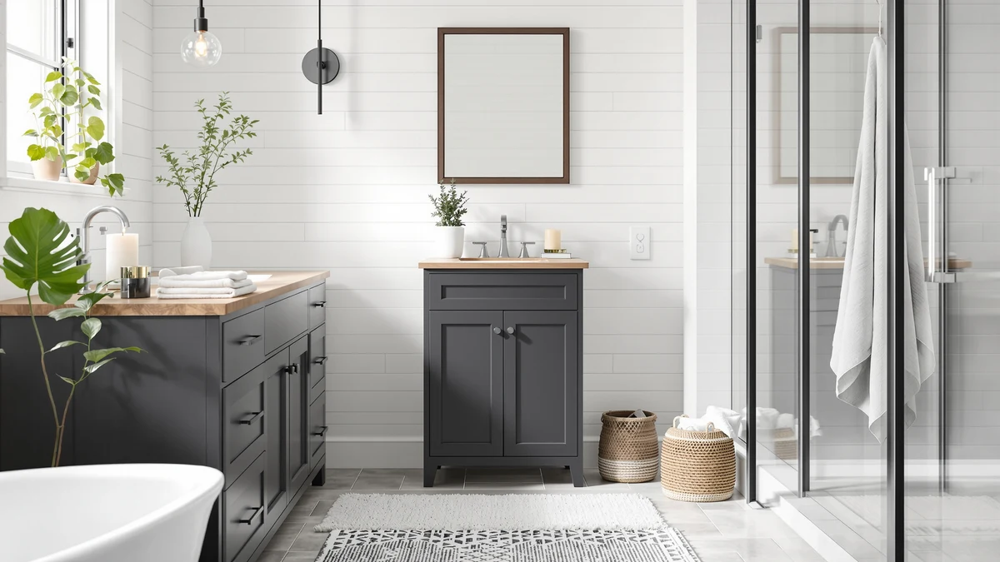

VASAGLE Bathroom Floor Cabinet Review (2026): Worth It?
Prices and picks verified as of October 2026. Independent, reader-supported reviews.


Quick Answer
At $71.99, the VASAGLE Bathroom Floor Cabinet is the pick for most bathrooms in this comparison: a 43.3-inch two-cabinet design with five adjustable shelf positions and an anti-tip kit. It matches the Homhedy alternative on price while offering close to a foot more enclosed storage, which makes it the better option unless your bathroom is tight on wall clearance.
Our pick: VASAGLE Bathroom Floor Cabinet with, $71.99 Check Price on Amazon
Bottom line: our top pick is the VASAGLE Bathroom Floor Cabinet at $71.99.
Things to Know Before You Buy
- The VASAGLE Bathroom Floor Cabinet pairs an upper and lower cabinet in a 43.3-inch frame, more enclosed storage than the Homhedy's 31.5-inch version covered below.
- At $71.99, it costs the same as the Homhedy alternative despite standing nearly 12 inches taller.
- Five adjustable shelf positions across both cabinets let you resize the interior for tall bottles or stacked towels.
- Built from MDF and particleboard with an included anti-tip kit, a common combination for freestanding bathroom cabinets in this price range.
- The two Kalrin alternatives below trade enclosed doors for open, over-the-toilet shelving at a slightly lower price.
This vasagle bathroom floor cabinet review looks at whether a two-cabinet floor unit can handle a bathroom's overflow of towels, cosmetics and cleaning supplies without eating up more floor space than a single narrow cabinet. Enclosed storage towers like this one appeal to bathrooms that want closed doors rather than open shelving, since tucked-away storage keeps daily clutter out of sight. At $71.99 and standing 43.3 inches tall on a 23.6-by-11.8-inch base, the VASAGLE Bathroom Floor Cabinet sits well above the Homhedy alternative in height while matching it exactly on price.
We researched the VASAGLE's build, compared its dimensions and pricing against the Homhedy Farmhouse cabinet and the two Kalrin over-the-toilet racks covered later, and read through verified owner feedback to see where it holds up. Floor cabinets in this category compete on a narrow set of factors: how much enclosed storage they offer per inch of floor space, how the shelves adjust to your actual bottles and towels, and whether the frame stays steady once loaded. Below, we break down what owners report about the VASAGLE Bathroom Floor Cabinet's construction, where it falls short, and who should consider one of the open-shelf alternatives instead. We also look at where the price lines up against the Kalrin racks, since $2 separates the cheapest alternative from the VASAGLE despite a very different storage format.
Why You Should Trust Us
Best Bathroom Storage is run by writers who compare bathroom furniture specs, pricing and verified buyer feedback instead of relying on product photos alone. Ilane Tall, our home and bath expert, has covered dozens of storage cabinets, shelving towers and over-the-toilet racks for this site, tracking how listed dimensions and materials hold up against what owners report after months of use. For this VASAGLE Bathroom Floor Cabinet review, we cross-checked the manufacturer's listed measurements against the Homhedy and Kalrin alternatives, and we did not take the marketing copy at face value. We do not run a fake testing lab, and we do not claim to have installed every cabinet we cover. Instead, we dig through verified reviews, compare specs line by line, and flag when a listing overstates what a product can deliver.
Our Research Experience
We did not put the VASAGLE Bathroom Floor Cabinet in a physical bathroom ourselves. Instead, we compared its listed specifications, material description and price against the Homhedy Farmhouse cabinet and both Kalrin over-the-toilet racks, and we read through the buyer feedback attached to this listing and similar VASAGLE products. Reviewers consistently note that the MDF and particleboard panels hold their shape well once the included anti-tip kit is anchored to the wall, a detail that matters more on a 43.3-inch cabinet than on shorter furniture. According to verified owner comments, most friction points involve assembly rather than the finished cabinet's stability once fully built. We weighed that feedback alongside the raw dimensions and price against the Homhedy and Kalrin alternatives to see where this VASAGLE Bathroom Floor Cabinet review lands.
Overview & Specs

VASAGLE Bathroom Floor Cabinet with
What we like
- 43.3-inch two-cabinet design holds noticeably more than the Homhedy's 31.5-inch version at the same price
- Five adjustable shelf positions across both compartments fit everything from tall bottles to stacked towels
- Included anti-tip kit anchors the frame to the wall, a detail reviewers mention as reassuring on a cabinet this tall
- Decorative panel doors keep bathroom clutter out of sight instead of leaving it on open shelves
Flaws but not dealbreakers
- MDF and particleboard construction is less rigid than an all-metal frame, according to reviewers of similar VASAGLE cabinets
- At 43.3 inches, it needs more wall clearance than the shorter Homhedy alternative below
- Assembly involves more panels and hardware than a single-cabinet design, which owners report adds to build time
| Material | Metal / wood |
| Size | 11.8”D x 23.6”W x 43.3”H |
This VASAGLE Bathroom Floor Cabinet review centers on a two-cabinet design built from MDF and particleboard, with decorative panel doors on both the upper and lower compartments. At 23.6 inches wide and 11.8 inches deep, it fits against a wall without crowding a small bathroom, while its 43.3-inch height gives it noticeably more enclosed storage than the 31.5-inch Homhedy alternative covered later. The included anti-tip kit anchors the cabinet to the wall, a feature that matters more on taller freestanding furniture than it does on a short cart.
Five adjustable shelf positions span the two cabinets, letting you resize the interior for everything from stacked towels to taller cleaning bottles. Verified buyers describe the MDF and particleboard panels as sturdy once assembled, though a few reviewers of similar VASAGLE cabinets note the material feels less substantial than solid wood. At $71.99, it matches the Homhedy Farmhouse cabinet on price while offering close to a foot more height, a trade-off worth considering if your bathroom has the wall space to spare. The decorative panel doors also distinguish it from the Kalrin racks below, which rely on open shelving instead of closed storage, so the choice between them often comes down to whether you want your bathroom supplies on display or behind a door.
What We Liked
Owner feedback for the VASAGLE Bathroom Floor Cabinet keeps pointing to capacity. Buyers describe the two-cabinet layout as enough to hold towels, toiletries and cleaning supplies without resorting to a second piece of furniture, a detail that matters more once you compare it to the smaller 31.5-inch Homhedy option. The five adjustable shelf positions are the other recurring highlight, since owners mention reconfiguring the interior for taller bottles or shorter stacked towels without needing extra tools.
Reviewers also call out the included anti-tip kit as a reassuring detail on a cabinet this tall, especially in households with children who might lean on an open door. A few owners mention that the decorative panel doors give the cabinet a more finished look than the open-shelf alternatives below, which matters if the cabinet sits in a visible part of the bathroom rather than tucked into a corner.
What Could Be Better
Assembly is the most common complaint in owner feedback on this VASAGLE Bathroom Floor Cabinet review. Buyers report that fitting two full cabinets' worth of panels and hardware together takes longer than a single-cabinet design, and a few mention double-checking instructions to avoid mismatched panels. The MDF and particleboard construction is the other point reviewers raise, describing it as sturdy once assembled but less substantial than the all-metal frame on the Kalrin racks below.
At 43.3 inches, the VASAGLE Bathroom Floor Cabinet also needs more wall clearance than the Homhedy alternative, so measure your available wall space before buying if your bathroom is already tight on clearance around the door swing.
Who Is It For?
The VASAGLE Bathroom Floor Cabinet fits a bathroom that wants enclosed storage rather than open shelving, particularly if you would rather close a door on clutter than stack it on display. Its 43.3-inch height makes sense for a household storing towels, cosmetics and cleaning supplies for more than one person, since the two-cabinet layout holds noticeably more than the shorter Homhedy option.
It is not the right choice if your bathroom has limited wall clearance or you prefer grabbing items off an open shelf instead of opening a cabinet door. In that case, either Kalrin over-the-toilet rack covered below fits a narrower footprint and skips the assembly time that comes with two full cabinets.
Alternatives to Consider
If the VASAGLE Bathroom Floor Cabinet's 43.3-inch height or closed-door design doesn't match what your bathroom needs, these three alternatives cover the most common trade-offs: a shorter Homhedy cabinet at the same price, and two Kalrin over-the-toilet racks that trade enclosed doors for open shelving at a slightly lower cost. Each one solves a different space problem, so measure your own bathroom before choosing between them. None of the three alternatives match the VASAGLE's enclosed storage volume, but each addresses a limitation the VASAGLE has, whether that is height, price, or the preference for open shelving over cabinet doors.

Editor’s Pick
Homhedy Farmhouse Bathroom Storage Cabinet
Stands nearly 12 inches shorter than the VASAGLE at the same $71.99 price, a better fit for a bathroom with limited wall clearance above the cabinet.
$71.99
Check Price on Amazon
Best Value
Kalrin Over-The-Toilet Storage Rack 4-Tier
Skips enclosed cabinet doors for open shelving and a toilet paper holder, a lower-footprint option at $69.99 for anyone short on floor space.
$69.99
Check Price on Amazon
Premium Choice
Kalrin Over-The-Toilet Storage Rack 4-Tier
The same 4-tier open-shelf design as the option above in a gray-white finish, worth comparing if its color better matches your bathroom.
$69.99
Check Price on AmazonFrequently Asked Questions
Is the VASAGLE Bathroom Floor Cabinet sturdy enough for daily use?
Reviewers of similar VASAGLE cabinets describe the frame as stable once the included anti-tip kit is anchored to the wall, even when both cabinets are loaded with towels and toiletries. The MDF and particleboard panels are less rigid than an all-metal frame, so heavier items are better placed on the lower shelves.
How does the VASAGLE Bathroom Floor Cabinet compare to the Homhedy Farmhouse cabinet?
The VASAGLE stands about 11.8 inches taller than the Homhedy and costs the same $71.99, making it the better option if you need more enclosed storage than footprint efficiency. The shorter Homhedy instead fits bathrooms where wall clearance above the cabinet is limited.
What comes in the box, and how long does assembly take?
Owners report the cabinet ships flat-packed with panels, shelves, doors and an anti-tip kit included. Assembly typically takes about an hour for the two-cabinet design, longer than a single-cabinet unit, though reviewers note the five adjustable shelf positions make it easy to customize once built.
Final Verdict
This vasagle bathroom floor cabinet review comes down to a straightforward trade-off: more enclosed storage and a taller frame against a longer assembly and a wider wall footprint than the Homhedy alternative. For a bathroom that wants two full cabinets of closed-door storage and has the wall space to spare, the VASAGLE Bathroom Floor Cabinet is the practical pick at $71.99. If your bathroom is tighter on wall clearance or you prefer open shelving, the Homhedy or either Kalrin rack above make better use of the space for a similar or lower price. Either way, VASAGLE remains the brand worth starting with if enclosed capacity matters more to you than squeezing the cabinet into the smallest possible footprint. Measure your wall space first, check it against the 43.3-by-23.6-by-11.8-inch dimensions above, and the decision between the VASAGLE and its three alternatives becomes straightforward.